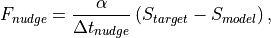
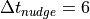
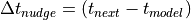
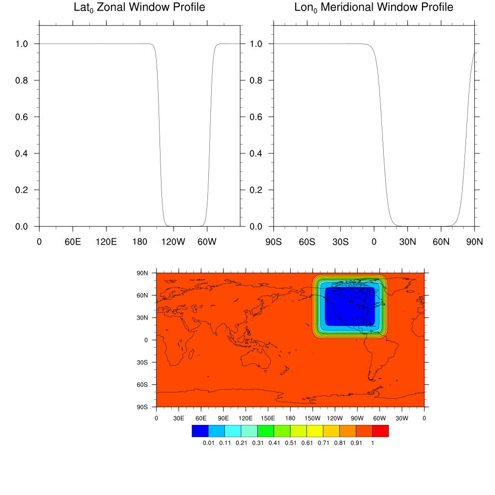
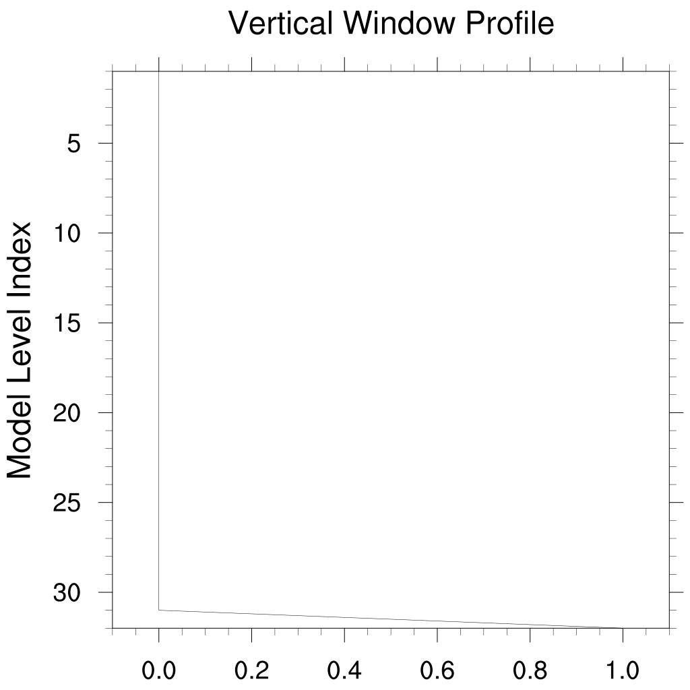

9. Physics modifications via the namelist
This chapter contains a few examples of customizing CAM’s run time
configuration. General instructions for modifying namelists using the
user_nl_cam file were given in Building and Running CAM. The examples below focus on some
specific modifications that would be included in user_nl_cam.
9.1. Radiative Constituents
The atmospheric constituents which impact the calculation of radiative fluxes and heating rates are referred to as radiative constituents. A single CAM run may potentially contain multiple sources of any given constituent, for example, a prognostic version of ozone from a chemistry scheme and a prescribed version of ozone from a dataset. The radiative constituent module was designed to
provide an explicit specification of the gas and aerosol constituents that impact the radiation calculations, and
allow this specification to be modified via the namelist.
Putting the entire specification of the radiative constituents into the namelist results in a certain amount of complexity which is unavoidable. This sections begins with a description of what’s in the default specification for the cam6 physics package. Following that are some examples of how to modify the default namelist settings.
9.1.1. Default rad_climate for cam7 physics
The cam7 physics package uses a simple prognostic GHG scheme, prognostic
modal aerosols, and prescribed bulk aerosols. rad_climate is the
namelist variable which holds the specification of radiatively active
constituents. The default value of rad_climate generated by
build-namelist is:
rad_climate =
'A:Q:H2O', 'N:O2:O2', 'A:CO2:CO2', 'N:ozone:O3',
'A:N2O:N2O', 'A:CH4:CH4', 'N:CFC11STAR:CFC11', 'A:CFC12:CFC12',
'M:mam4_mode1:$DIN_LOC_ROOT/atm/cam/physprops/mam4_mode1_rrtmg_aeronetdust_sig1.6_dgnh.48_c140304.nc',
'M:mam4_mode2:$DIN_LOC_ROOT/atm/cam/physprops/mam4_mode2_rrtmg_aitkendust_c141106.nc',
'M:mam4_mode3:$DIN_LOC_ROOT/atm/cam/physprops/mam4_mode3_rrtmg_aeronetdust_c141106.nc',
'M:mam4_mode4:$DIN_LOC_ROOT/atm/cam/physprops/mam4_mode4_rrtmg_c130628.nc',
'N:VOLC_MMR1:$DIN_LOC_ROOT/atm/cam/physprops/volc_camRRTMG_byradius_sigma1.6_mode1_c210211.nc',
'N:VOLC_MMR2:$DIN_LOC_ROOT/atm/cam/physprops/volc_camRRTMG_byradius_sigma1.6_mode2_c210211.nc',
'N:VOLC_MMR3:$DIN_LOC_ROOT/atm/cam/physprops/volc_camRRTMG_byradius_sigma1.2_mode3_c210211.nc'
The rad_climate variable takes an array of string values. Each of the
strings has three fields separated by colons:
The first field of each string is either
A,N, orM. AnAindicates the constituent is advected, anNindicates the constituent is not advected, and anMindicates the constituent is an aerosol mode (whose components may be advected or non-advected). Generally a non-advected constituent is one whose value is prescribed from a dataset but that’s not always the case. It’s also possible that a non-advected constituent is one that has been prognosed by a chemistry scheme (e.g. the cloud borne species in the modal aerosol models) or diagnosed from other prognostic species. In terms of code implementation, the advected constituents are stored in the physics state object while the non-advected constituents are stored in the physics buffer.The second field in each string is a name that is used to identify the constituent in the appropriate CAM internal data structure (there are separate data structures for the advected and the non-advected constituents).
The third field is either a name from the set of gas specie names recognized by the radiation code, or it is an absolute pathname of a dataset that contains physical and optical properties of an aerosol. This third field is how CAM distinquishes the gas from the aerosol species.
The first eight strings in the example above are the gas phase
constituents. The next four strings are aerosol modes, and the final three
strings are prescribed bulk aerosols. Roughly, the rad_climate
variable lists the aerosol constituents whose contributions are added
together to compute the total aerosol optical depth. In the case of the
bulk aerosols the optical depths due to the individual aerosol species are
summed while for the modal aerosol model it is the modes that are
summed. Hence each mode has an entry in the rad_climate list, along
with a file that contains physical and optical properties of the mode as a
whole. In the example above there are four modes identified by the names
mam4_mode1, mam4_mode2, mam4_mode3, and mam4_mode4. These
names are hardwired in the build-namelist utility and are only used to
connect each mode with more detailed specification of the constituents that
comprise it. That specification is given by the namelist variable
mode_defs and looks as follows for the default ghg_mam4 chemistry
scheme.
mode_defs =
'mam4_mode1:accum:=',
'A:num_a1:N:num_c1:num_mr:+',
'A:so4_a1:N:so4_c1:sulfate:$DIN_LOC_ROOT/atm/cam/physprops/sulfate_rrtmg_c080918.nc:+',
'A:pom_a1:N:pom_c1:p-organic:$DIN_LOC_ROOT/atm/cam/physprops/ocpho_rrtmg_c130709.nc:+',
'A:soa_a1:N:soa_c1:s-organic:$DIN_LOC_ROOT/atm/cam/physprops/ocphi_rrtmg_c100508.nc:+',
'A:bc_a1:N:bc_c1:black-c:$DIN_LOC_ROOT/atm/cam/physprops/bcpho_rrtmg_c100508.nc:+',
'A:dst_a1:N:dst_c1:dust:$DIN_LOC_ROOT/atm/cam/physprops/dust_aeronet_rrtmg_c141106.nc:+',
'A:ncl_a1:N:ncl_c1:seasalt:$DIN_LOC_ROOT/atm/cam/physprops/ssam_rrtmg_c100508.nc',
'mam4_mode2:aitken:=',
'A:num_a2:N:num_c2:num_mr:+',
'A:so4_a2:N:so4_c2:sulfate:$DIN_LOC_ROOT/atm/cam/physprops/sulfate_rrtmg_c080918.nc:+',
'A:soa_a2:N:soa_c2:s-organic:$DIN_LOC_ROOT/atm/cam/physprops/ocphi_rrtmg_c100508.nc:+',
'A:ncl_a2:N:ncl_c2:seasalt:$DIN_LOC_ROOT/atm/cam/physprops/ssam_rrtmg_c100508.nc:+',
'A:dst_a2:N:dst_c2:dust:$DIN_LOC_ROOT/atm/cam/physprops/dust_aeronet_rrtmg_c141106.nc',
'mam4_mode3:coarse:=',
'A:num_a3:N:num_c3:num_mr:+',
'A:dst_a3:N:dst_c3:dust:$DIN_LOC_ROOT/atm/cam/physprops/dust_aeronet_rrtmg_c141106.nc:+',
'A:ncl_a3:N:ncl_c3:seasalt:$DIN_LOC_ROOT/atm/cam/physprops/ssam_rrtmg_c100508.nc:+',
'A:so4_a3:N:so4_c3:sulfate:$DIN_LOC_ROOT/atm/cam/physprops/sulfate_rrtmg_c080918.nc',
'mam4_mode4:primary_carbon:=',
'A:num_a4:N:num_c4:num_mr:+',
'A:pom_a4:N:pom_c4:p-organic:$DIN_LOC_ROOT/atm/cam/physprops/ocpho_rrtmg_c130709.nc:+',
'A:bc_a4:N:bc_c4:black-c:$DIN_LOC_ROOT/atm/cam/physprops/bcpho_rrtmg_c100508.nc'
Similarly to the rad_climate variable, the mode_defs variable is an
array of strings which provide a definition for all the modes that may be
used in a single run. The modes don’t all need to appear in the
rad_climate variable; some may only be used for diagnostic radiation
calculations which will be discussed in more detail later.
There are three different types of strings in mode_defs:
The initial string in each mode specification contains three fields. The first is a name that identifies the mode, the second is a name that identifies the type of the mode, and the final is the token
=.One string in each mode specification must contain the names for the mode number concentrations in both the interstitial and cloud borne phases.
One or more strings in each mode specification must contain the names for the mass mixing ratios in both the interstitial and cloud borne phases of the individual constituents that comprise the mode.
The example of mode_defs above has been formatted in a way that
makes the individual parts of each mode definition stand out. The
actual output from the build-namelist utility is not formatted
like this and is a bit harder to decipher.
What follows is an detailed explanation of the mode definitions in the example above.
There are four modes defined, i.e., mam4_mode1, mam4_mode2,
mam4_mode3, and mam4_mode4. These mode names are arbitrary, the
only requirement being that the same name is used in the rad_climate
(or rad_diag_N) and the mode_defs variables. These default mode
names for ghg_mam4 are hardcoded in the build-namelist
utility. The four modes are of type accum (accumulation), aitken,
coarse, and primary_carbon respectively. The names for the mode
types must match the ones that are hardcoded in the modal_aero_data
module. The first string in each mode definition is terminated with and
= sign.
The second line in the definition of each mode contains the names of the
number concentrations for the interstitial and cloud borne phases. Looking
specifically at the definition for mam4_mode1, the first two fields are
for the interstitial phase and specify that the name num_a1 is an
advected constituent (A), while the third and fourth fields are for the
cloud borne phase and specify that the name num_c1 is a non-advected
constituent (N). The names of the number concentration constituents are
hardcoded in the modal_aero_initialize_data module. The fifth field,
num_mr, is a fixed token recognized by the parser of the mode_defs
strings (in the rad_constituents module) as an indicator that the
string contains the number concentration names. The final token in the
string, a +, signals to the parser that the definition of the current
mode continues in the next string.
The third through final strings in each mode definition contain
specifications for each specie in the mode. Looking again at the definition
of mam4_mode1, the first specie is of type sulfate which is
indicated by the fifth field in that string. The specie type names are
hardcoded in the modal_aero_data module. The first two fields in the
string provide the name for the mass mixing ratio of the specie in the
interstitial phase (so4_a1), and indicate that it is an advected
constituent (A). Fields three and four specify that the name of the
mass mixing ratio for the cloud borne phase is so4_c1, and that this is
a non-advected constituent (N). The names of the mass mixing ratio
constituents are hardcoded in the modal_aero_initialize_data
module. The sixth field in the string is the absolute pathname of the file
containing physical and optical properties of the specie. The last field in
the string contains the token + which again indicates that the
definition of the mode continues in the next string.
9.1.2. Example - Modify a radiatively active gas
Suppose that we wish to modify the distribution of water vapor that is seen by the radiation calculations. More specifically, consider modifying just the stratospheric part of the water vapor distribution while leaving the troposheric distribution unchanged. To modify a radiatively active gas two things must be done:
Change the name (and possibly the type) of the constituent which is providing the mass mixing ratios to the radiation code. This is a simple modification to the
rad_climatevalue.Make the necessary modifications to CAM to provide the new constituent mixing ratios.
A likely scenario for this example would be to create a new module which is
responsible for adding the modified water vapor field to the physics
buffer. This module could leverage the existing tropopause module to
determine the vertical levels where changes need to be made. It could also
leverage existing modules for reading and interpolating prescribed
constituents, for example the prescribed_ozone module. Details of how
to make this type of source code modification won’t be covered here.
Now suppose the source code modifications have been made and the new water
vapor constituent is in the physics buffer with the name
Q_fixstrat. The best way to modify the rad_climate variable is to
start from a value that was generated by build-namelist for the
configuration of interest. This would be found in the atm_in file in
the run directory. Then modify the rad_climate variable and add the
modified version to the user_nl_cam file in the CASE directory. If we
were doing this to the default value of rad_climate as presented above,
the only difference would be that the string for water vapor
'A:Q:H2O'
would be replaced by
'N:Q_fixstrat:H2O'
In addition to specifying the new name for the constituent
(Q_fixstrat), it was necessary to replace the A by an N since
the new constituent is not advected, even though it is derived in part from
the constituent Q which is advected.
9.2. Diagnostic radiative forcing
There are several namelist variables available for online radiative forcing
calculations with the physics packages that use the RRTMG (cam5, cam6) and
RRTMGP (cam7) radiation packages. Namelist variables are available for ten
radiative forcing calculations; rad_diag_1, …, rad_diag_10. The
values of these variables use the exact same format as the rad_climate
variable. When a diagnostic calculation is requested, for example by
setting the variable rad_diag_1, then the default history output
variables for the radiative heating rates and fluxes will be output for the
diagnostic calculation as well. The names of the variables for the
diagnostic calculation will be distinguished from those that affect the
climate simulation by appending the strings '_d1', …, '_d10' for
diagnostic calculations specified by rad_diag_1 through rad_diag_10
respectively.
The ability to do radiative forcing calculations with the older cam_rt
radiation package used by the cam4 physics is provided by using the
PORT configuration of CAM which is documented here, and described in the paper
Conley et al. [2013]. PORT can also be used for diagnostic
calculations with the cam5, cam6, and cam7 physics.
9.2.1. Example - Aerosol radiative forcing
To compute the total aerosol radiative forcing we need a diagnostic
calculation in which all the aerosols have been removed. To do this we
start from the default setting for the rad_climate variable, use
that as the initial setting for rad_diag_1, and then edit that
initial setting to remove the aerosols. In the cam7 physics this
would be done by adding the following to user_nl_cam:
rad_diag_1 =
'A:Q:H2O', 'N:O2:O2', 'A:CO2:CO2', 'N:ozone:O3',
'A:N2O:N2O', 'A:CH4:CH4', 'N:CFC11STAR:CFC11', 'A:CFC12:CFC12',
9.2.2. Example - Black carbon radiative forcing
To compute the radiative forcing of a single aerosol specie we need a
diagnostic calculation in which that specie has been removed from all modes
that contain it. This is a bit more complicated that the previous example
where we were able to remove entire modes from the value of
rad_diag_1. Removing species from modes requires us to create new mode
definitions. Using black carbon as a specific example, we see from the
default definitions of the ghg_mam4 modes
that
black carbon is contained in mam4_mode1 and mam4_mode4. The best
way to create the definition of a new mode which doesn’t contain black
carbon is to copy the definition of modes 1 and 4, change their names, and
remove the black carbon from the definition. Then use these new modes in
place of the originals in the specifier for rad_diag_1. Below are the
updated definitions of mode_defs and rad_diag_1 which would be
added to user_nl_cam:
mode_defs =
'mam4_mode1:accum:=',
'A:num_a1:N:num_c1:num_mr:+',
'A:so4_a1:N:so4_c1:sulfate:$DIN_LOC_ROOT/atm/cam/physprops/sulfate_rrtmg_c080918.nc:+',
'A:pom_a1:N:pom_c1:p-organic:$DIN_LOC_ROOT/atm/cam/physprops/ocpho_rrtmg_c130709.nc:+',
'A:soa_a1:N:soa_c1:s-organic:$DIN_LOC_ROOT/atm/cam/physprops/ocphi_rrtmg_c100508.nc:+',
'A:bc_a1:N:bc_c1:black-c:$DIN_LOC_ROOT/atm/cam/physprops/bcpho_rrtmg_c100508.nc:+',
'A:dst_a1:N:dst_c1:dust:$DIN_LOC_ROOT/atm/cam/physprops/dust_aeronet_rrtmg_c141106.nc:+',
'A:ncl_a1:N:ncl_c1:seasalt:$DIN_LOC_ROOT/atm/cam/physprops/ssam_rrtmg_c100508.nc',
'mam4_mode2:aitken:=',
'A:num_a2:N:num_c2:num_mr:+',
'A:so4_a2:N:so4_c2:sulfate:$DIN_LOC_ROOT/atm/cam/physprops/sulfate_rrtmg_c080918.nc:+',
'A:soa_a2:N:soa_c2:s-organic:$DIN_LOC_ROOT/atm/cam/physprops/ocphi_rrtmg_c100508.nc:+',
'A:ncl_a2:N:ncl_c2:seasalt:$DIN_LOC_ROOT/atm/cam/physprops/ssam_rrtmg_c100508.nc:+',
'A:dst_a2:N:dst_c2:dust:$DIN_LOC_ROOT/atm/cam/physprops/dust_aeronet_rrtmg_c141106.nc',
'mam4_mode3:coarse:=',
'A:num_a3:N:num_c3:num_mr:+',
'A:dst_a3:N:dst_c3:dust:$DIN_LOC_ROOT/atm/cam/physprops/dust_aeronet_rrtmg_c141106.nc:+',
'A:ncl_a3:N:ncl_c3:seasalt:$DIN_LOC_ROOT/atm/cam/physprops/ssam_rrtmg_c100508.nc:+',
'A:so4_a3:N:so4_c3:sulfate:$DIN_LOC_ROOT/atm/cam/physprops/sulfate_rrtmg_c080918.nc',
'mam4_mode4:primary_carbon:=',
'A:num_a4:N:num_c4:num_mr:+',
'A:pom_a4:N:pom_c4:p-organic:$DIN_LOC_ROOT/atm/cam/physprops/ocpho_rrtmg_c130709.nc:+',
'A:bc_a4:N:bc_c4:black-c:$DIN_LOC_ROOT/atm/cam/physprops/bcpho_rrtmg_c100508.nc'
'mam4_mode1_nobc:accum:=',
'A:num_a1:N:num_c1:num_mr:+',
'A:so4_a1:N:so4_c1:sulfate:$DIN_LOC_ROOT/atm/cam/physprops/sulfate_rrtmg_c080918.nc:+',
'A:pom_a1:N:pom_c1:p-organic:$DIN_LOC_ROOT/atm/cam/physprops/ocpho_rrtmg_c130709.nc:+',
'A:soa_a1:N:soa_c1:s-organic:$DIN_LOC_ROOT/atm/cam/physprops/ocphi_rrtmg_c100508.nc:+',
'A:dst_a1:N:dst_c1:dust:$DIN_LOC_ROOT/atm/cam/physprops/dust_aeronet_rrtmg_c141106.nc:+',
'A:ncl_a1:N:ncl_c1:seasalt:$DIN_LOC_ROOT/atm/cam/physprops/ssam_rrtmg_c100508.nc',
'mam4_mode4:primary_carbon:=',
'A:num_a4:N:num_c4:num_mr:+',
'A:pom_a4:N:pom_c4:p-organic:$DIN_LOC_ROOT/atm/cam/physprops/ocpho_rrtmg_c130709.nc'
rad_diag_1 =
'A:Q:H2O', 'N:O2:O2', 'A:CO2:CO2', 'N:ozone:O3',
'A:N2O:N2O', 'A:CH4:CH4', 'N:CFC11STAR:CFC11', 'A:CFC12:CFC12',
'M:mam4_mode1_nobc:$DIN_LOC_ROOT/atm/cam/physprops/mam4_mode1_rrtmg_aeronetdust_sig1.6_dgnh.48_c140304.nc',
'M:mam4_mode2:$DIN_LOC_ROOT/atm/cam/physprops/mam4_mode2_rrtmg_aitkendust_c141106.nc',
'M:mam4_mode3:$DIN_LOC_ROOT/atm/cam/physprops/mam4_mode3_rrtmg_aeronetdust_c141106.nc',
'M:mam4_mode4_nobc:$DIN_LOC_ROOT/atm/cam/physprops/mam4_mode4_rrtmg_c130628.nc',
'N:VOLC_MMR1:$DIN_LOC_ROOT/atm/cam/physprops/volc_camRRTMG_byradius_sigma1.6_mode1_c210211.nc',
'N:VOLC_MMR2:$DIN_LOC_ROOT/atm/cam/physprops/volc_camRRTMG_byradius_sigma1.6_mode2_c210211.nc',
'N:VOLC_MMR3:$DIN_LOC_ROOT/atm/cam/physprops/volc_camRRTMG_byradius_sigma1.2_mode3_c210211.nc'
The new modes, mam4_mode1_nobc and mam4_mode4_nobc, have been
appended to the end of the modes used in the climate calculation, and then
have been used in place of mam4_mode1 and mam4_mode4 in the
rad_diag_1 value.
Note
The current version of the modal aerosol code does not support doing diagnostic radiation calculations with aerosol modes when the model is run with modal_strat_sulfate set to true. This option is not used with cam6 or cam7 physics, but it is used with WACCM.
9.3. Nudging
Nudging augments the physics tendencies for the prognostic variables [U,V,T,Q] in order to drive the model solution toward some prescribed target states which are avaiable at a set of discrete target times. In general there are three distinct methodologies used to assess deficiencies in the model formulation. These include:
Mechanistic Studies: Nudging tendencies are applied to specify boundary forcing or to impose some mode of variability for the analysis of the model response.
Coercion Studies: Nudging tendencies are applied to constrain certain model variability in order to isolate and study a given parameterization or process.
Diagnostic Studies: Nudging tendencies are applied to achieve some observed result. The tendencies are then post-processed to identify systematic biases, which are in turn used to diagnose deficiencies in physics parameterizations.
9.3.1. Target Data
Typically the target states are derived from available reanalyses products, however a variety of other derived target states are possible. The only requirement is that the [U,V,T,Q] target values must be pre-processed onto the current model grid and stored in a separate netcdf file for each target time. As an example of non-reanalyses usage, the model states from an FV-dycore run were stored and processed onto an SE-dycore grid of comparable resolution. The tendencies from the nudged SE-dycore run were then utilized to evaluate the biases between the two dycores.
Pre-Processing Reanalyses Data:
In the components/cam/tools/nudging/Gen_Data/ directory scripts are avaiable which create the
target data files for a variety of reanalyses products. There are separate scripts
for the SE and FV dycores. In addition to interpolating onto a given grid, the
values are also adjusted to account for topographical differences between CESM and
the reanalyses models. See the README files for an overview of the script settings
needed to create a desired dataset.
Some recently revised versions of the processing scripts are also available in the https://github.com/NCAR/IPT/tree/master/Meterological_Reanalysis_Data repository. The processing scripts are slightly different for the two available dycores, so they are contained in separate directories. in each directory, there is a README that provides general guidance for setting the script variables for a desired reanalysis product.
Finite_volume_dycore/ |
README Gen_Data_f09/ |
Spectral_element_dycore/ |
README Gen_Data_ne30/ Gen_Data_ne30np3/ Gen_Data_ne0CONUSne30x8/ Gen_Data_NEWGRID/ |
For the FV dycore, the directory Gen_Data_f09 has processing scripts set up for a 1 degree grid. Within this directory, there are two csh scripts, one configured for processing MERRA2 data and the other for processing ERA-Interim data. If a user desires data from either of these reanalysis products, then all that is needed is to adjust the dates for processing, the paths for input/output files, and any changes in vertical grid or topography values. For other reanalysis products, the NCL scripts are pre-configured for a number of available options (see makeIC_extract_analysis_info.ncl), so converting to one of those will just involve editing a csh script to set the paths and processing options consistent with the product. See the README for guidance. If, on the other hand, a user has a newer or other reanalysis product, then a template must be added in the NCL programs to define the structure of the input dataset. For this case, the user should use a known and familiar existing template in the NCL programs as a guide.
In the Spectral_element_dycore directory, there are sub-directories containing scripts that are configured for a particular SE grid. The Gen_Data_ne30 directory has scripts set up for a uniform 1 degree spectral element grid, Gen_Data_ne30pg3 is set up for a physics grid, and Gen_Data_ne0CONUSne30x8 is configured for the variable resolution CONUS grid. In each of these, there are Gen_*.csh scripts set up for MERRA2 and other reanalysis products. As for the FV dycore, the README provides some guidance in making modifications to these scripts. There is also a directory that can be used as a template when tailoring the scripts for a user defined grid.
One substantial difference with the FV processing is in the horizontal interpolation. When the scripts for the SE grids were being developed, there were significant errors in the ESMF processing at the poles and for wrap around gridpoints. Complicating the development, was the fact that each update to the ESMF routines within NCL would result in failures in the processing scripts. For this reason, a version of the ESMF processing routines that contain fixes for these errors is included with the reanalysis processing scripts in the Gen_Data directory (ESMF_regridding.ncl). From the user stand point, this means that for each horizontal SE grid, the user must edit makeIC_se_002.ncl and set a hardcoded path to the SCRIP file for that grid. Note that the ESMF processing routines have been substantially improved since this time, but it is not known if the pole problems have been resolved. So a user may wish to revise the scripts to eliminate the ESMF code and use the up to date ESMF routines in NCL instead. The plan moving forward is for this processing step to be carried out at run time directly from the reanalysis archives (making these scripts unnecessary), so for the time being these scripts will continue as is without further development.
The WRAPIT Problem:
The NCL scripts depend on FORTRAN subroutines which must be pre-compiled to create a shared library (MAKEIC.so) using the WRAPIT command. This command has lead to some problems in the past. As NCL was updated, this command would occasionally fail to work. Since NCL is no longer under development, this should not be a problem, but if users have errors due this command not working correctly, a work around is to reference that command from a previous release of NCL.
The other problem is for users that need to process a large amount of data. The processing scripts can take quite a long time to run, so to speed up the process a RUNNUM variable was added to the script so that multiple copies can be run at the same time. Since the processing is in a common directory, the WRAPIT command from one instance clobbers the shared library used by all. This would result in total failure. Users who need to run in this manner must comment out the WRAPIT command in the script and run it to create the library prior to submitting the processing scripts.
9.3.2. Implementation
Nudging is implemented as a relaxation tendency between the current model state and a desired target state.

where S is one of the prognostic variables [U,V,T,Q],  is a noramlized
strength coeffcient between [0,1], and is the time scale for
the relaxation. Currently there are two options for the target state. The first uses
the target state at the next available target time in the future, such that the model
is systematically pulled toward the desired state over the time interval. For the second,
in order to constrain the model to follow a precribed path, the nearby (in time) target
values are interpolated linearly to the current model time. There are currently two options
for the time scale of the relaxation . The first uses the constant
difference between available target times (e.g.
is a noramlized
strength coeffcient between [0,1], and is the time scale for
the relaxation. Currently there are two options for the target state. The first uses
the target state at the next available target time in the future, such that the model
is systematically pulled toward the desired state over the time interval. For the second,
in order to constrain the model to follow a precribed path, the nearby (in time) target
values are interpolated linearly to the current model time. There are currently two options
for the time scale of the relaxation . The first uses the constant
difference between available target times (e.g.

hours for ERA-I). The second uses a time scale that gets systematically stronger as the current model time approaches the next future target time. (e.g.
).Namelist variables provide an option to window nudging tendencies horizontally and vertically. The Logistics function provides a smooth parameterized approximation of the Heaviside step function. Combinations of these, scaled to vary from 0 to 1, produce flexible window functions in which the user can tailor the transition region to suit their needs.
The positioning, size, and transition lengths for the horizontal window are expressed in terms of (lat,lon) values in degrees. In the vertical, the window is specified in terms of model level indices [1,NLEV]. This makes specifying the vertical window function a bit awkward, but it ensures that the vertical windowing remains constant in time. For a typical window which is constant in the vertical, the low index is set to 0, the high index is set to (NLEV+1), and the transition lengths are set to 0.001.
To preview a window function prior to use, the NCL program located in
components/cam/tools/nudging/Lookat_NudgeWindow/ will read in the
namelist values from user_nl_cam and produce plots for the given
settings. See the README for details.
Note
While it is not necessary, nudging runs are typically initialized using one of the pre-processed target states to minimize start up errors.
The target datasets, the nudging module, and it’s namelist varaibles are all set up to include surface pressure(PS) values as well as the prognostic variables [U,V,T,Q]. Nudging of surface pressures is possible but it is not currenlty implemented. It would require a separate nudging tendency passed to and included in the time stepping of each dycore.
9.3.3. Output Values
The nudging module provides the following history file outputs:
The applied nudging tendencies: Nudge_U, Nudge_V, Nudge_T, Nudge_Q
The nudging target values: Target_U, Target_V, Target_T, Target_Q
9.3.4. Namelist Values
A template for the namelist variables can be found in the
components/cam/tools/nudging/ directory. The following table lists the
variables in the namelist and describes their usage.
Variable |
Type |
Description |
Values |
|---|---|---|---|
Nudge_Model |
LOGICAL |
Toggle to activate nudging |
True = Nudging ON
False = Nudging OFF
|
Nudge_Path |
CHAR |
Path to Target files |
|
Nudge_File_Template |
CHAR |
Target filename template with year, month, day, and second values replaced by %y, %m, %d, and %s respectively. |
|
Nudge_Force_Opt |
INTEGER |
Select the form of the Target values: |
|
NEXT = Target at next future time LINEAR = Linearly interpolate Target values to current model time. |
0 = NEXT
1 = LINEAR
|
||
Nudge_TimeScale_Opt |
INTEGER |
Select the timescale for the relaxation: |
|
WEAK = Constant time scale based in the time interval of Target values. STRONG = Variable timescale which gets stronger near each Target time. |
0 = WEAK
1 = STRONG
|
||
Nudge_Times_Per_Day |
INTEGER |
Number of Target files per day. |
(e.g. 4 –> 6 hourly) |
Model_Times_Per_Day |
INTEGER |
Number of times to update the nudging tendencies per day. (Internally this value is restricted to be longer than the current model timestep and shorter than the Target timestep) |
(e.g. 48 –> 1800 Sec timestep) |
Nudge_Uprof
Nudge_Vprof
Nudge_Tprof
Nudge_Qprof
|
INTEGER |
Selectively apply nudging to [U,V,T,Q]: |
|
OFF = Switch off nudging ON = Apply nudging everywhere WINDOW = Apply window function to nudging tendencies. |
0 = OFF
1 = ON
2 = WINDOW
|
||
Nudge_Ucoef
Nudge_Vcoef
Nudge_Tcoef
Nudge_Qcoef
|
REAL |
Selectively adjust the nudging strength applied to [U,V,T,Q]. (normalized) |
[0.,1.] |
Nudge_Beg_Year
Nudge_Beg_Month
Nudge_Beg_Day
|
INTEGER |
Year, Month, Day to begin nudging. |
YYYY
MM
DD
|
Nudge_End_Year
Nudge_End_Month
Nudge_End_Day
|
INTEGER |
Year, Month, Day to stop nudging. |
YYYY
MM
DD
|
Nudge_Hwin_lat0
Nudge_Hwin_lon0
|
REAL |
Specify the horizontal center of the window (lat0,lon0) in degrees. |
[-90., +90.]
[ 0. , 360.]
|
Nudge_Hwin_latWidth
Nudge_Hwin_lonWidth
|
REAL |
Specify the lat and lon widths of the horizontal window in degrees. Setting a width to a large value (e.g. 999.) renders the window constant in that direction. |
> 0. |
Nudge_Hwin_latDelta
Nudge_Hwin_lonDelta
|
REAL |
Specify the sharpness of the window transition with a length in degrees. Small values yield a step function while larger give a smoother transition. |
> 0. |
Nudge_Hwin_Invert |
LOGICAL |
A logical flag used to invert the horizontal window function to get its compliment. (e.g. to nudge outside a given window) |
True/False |
Nudge_Vwin_Lindex
Nudge_Vwin_Hindex
|
REAL |
In the vertical, the window is specified in terms of model indices. These specify the High (model bottom) and Low (model top) transition levels. (For constant vertical window, set Lindex=0 and Hindex=NLEV+1) |
[0., (NLEV-1)]
[2., (NLEV+1)]
|
Nudge_Vwin_Ldelta
Nudge_Vwin_Hdelta
|
REAL |
The transition lengths are specified in terms of model level indices. (For a constant vertical window, set the transition lengths to 0.001) |
> 0. |
Nudge_Vwin_Invert |
LOGICAL |
A logical flag used to invert the horizontal window function to get its compliment. |
True/False |
9.3.5. Windowing Examples
Conus Horizontal Window
This example uses the Horizontal window variables to create a CONUS window for nudging:
Nudge_Hwin_lat0 =45.0
Nudge_Hwin_latWidth=75.
Nudge_Hwin_latDelta=5.
Nudge_Hwin_lon0 =260.
Nudge_Hwin_lonWidth=90.
Nudge_Hwin_lonDelta=5.
Nudge_Hwin_Invert =.true.
Note that for this use case, the window is inverted so that nudging is used to constrain the model toward reanalyses values outside the CONUS region, while the model evolves freely in the interior.

Surface Nudging of Q
Since the nudging tendencies are applied separately from the convective parameterizations, nudging Q values in the interior of the model can lead to misleading results. Particularly in precipitation values. On the other hand, nudging Q at the surface layer is an effective proxy for surface fluxes of water vapor. The following settings for the vertical window illustrate how to nudge only at the surface for a 32 level model.
Nudge_Vwin_Hindex =33.
Nudge_Vwin_Hdelta =0.001
Nudge_Vwin_Lindex =32.
Nudge_Vwin_Ldelta =0.001
Nudge_Vwin_Invert =.false.

9.3.6. EXAMPLE: Setting Up and Running A Nudging Experiment
In order to set up and run a physics-side nudging experiment, the user must first generate a set of target data to nudge toward. Once the data has been prepared, then after the desired case has been created, the nudging is applied by setting the namelist variables outlined above. As an example of this process, consider a Spectral Element variable resolution grid with a base resolution of ne30 and a refinement to ne120 over the South American continent.
Modifying the Scripts For a Newly Created Grid:
For our ne0np4.SAM01.ne30x4 grid, we would like to nudge the model toward MERRA2 reanalysis data, begin by making a copy of the NEWGRID directory for your new grid.
% cp -r Gen_Data_NEWGRID Gen_Data_ne0np4.SAM01.ne30x4
% cd Gen_Data_ne0np4.SAM01.ne30x4
% mv Gen_MERRA2_NEWGRID.csh Gen_MERRA2_ne0np4.SAM01.ne30x4.csh
Now edit your new script, and set the BATCH commands.
#!/bin/csh
#
#SBATCH -J Gen_MERRA2_ne0np4.SAM01.ne30x4.csh
#SBATCH -n 1
#SBATCH --ntasks-per-node=1
#SBATCH -t 24:00:00
#SBATCH -A Pxxxxxxx
#SBATCH -p dav
#SBATCH -e Log.Gen_MERRA2_SAM01.err.%J
#SBATCH -o Log.Gen_MERRA2_SAM01.out.%J
#SBATCH --mail-type=ALL
#SBATCH --mail-user= me@ucar.edu
In the Configuration section, set the reference date corresponding to the first day of data you desire, then number of days of data to process from that date, and the path where you wish to have the data stored.
#=============================================================
# CONFIGURATION SECTION:
#=============================================================
# Set a REFERENCE (Starting) Date and the number of days to process
#----------------------------------------------------------------------
set RUNNUM=01
set REF_DATE= 20121201
set NUM_DAYS= 400
# Set INPUT/OUTPUT/TMP directories
#--------------------------------------------------------
set NAMELIST='./Config/Config_makeIC-'$RUNNUM'.nl'
set MYLOGDIR='./LOG/LOG_002.'$RUNNUM'/'
set MYTMPDIR='./TMP/TMP_002.'$RUNNUM'/'
set MYOUTDIR='/path/to/my/repo/ne0np4.SAM01.ne30x4/nudging/MERRA2/'
set INPUTDIR='/glade/collections/rda/data/ds313.3/orig_res/'
# Set ESMF options
#---------------------------
set ESMF_interp='conserve'
set ESMF_pole='none'
set ESMF_clean='False'
set ESMF_clean='True'
For the processing options, set the CASE name. This is the root
filename for your nudging data files. Note that some reanalysis datasets
store winds in the form of vorticity and divergence values rather than
U,V. It is important that the VORT_DIV_TO_UV flag is set to True for
these datasets, this is a common source of processing errors. Finally, set
the fname_grid_info value to point to a file containing the desired
ouput grid, and set fname_phis_output to point to a file containing the
model topography.
# Set Processing options
#-------------------------------------
set CASE = 'MERRA2_ne0np4.SAM01.ne30x4_L32'
set DYCORE = 'se'
set PRECISION = 'float'
set VORT_DIV_TO_UV = 'False'
set SST_MASK = 'False'
set ICE_MASK = 'False'
set OUTPUT_PHIS = 'True'
set REGRID_ALL = 'False'
set ADJUST_STATE_FROM_TOPO = 'True'
set MASS_FIX = 'True'
# Set files containing OUTPUT Grid structure and topography
#------------------------------------------------------------------------------------
set fname_grid_info = \
'/path/to/my/repo/ne0np4.SAM01.ne30x4/inic/cami-mam4_0000-01-01_ne0np4.SAM01.ne30x4_L32_c200309.nc'
set fname_phis_output = \
'/path/to/my/repo/ne0np4.SAM01.ne30x4/topo/topo_ne30np4.SAM01.ne30x4_blin_200309.nc'
set ftype_phis_output = 'SE_TOPOGRAPHY'
For MERRA2, the 8X time daily reanalysis data is stored in daily files with 8 time slices in each file. For ERAI data, on the other hand, the 4x times daily data are stored in 6 hourly files with one time slice per file. The user must configure the script to accomodate these differences in the data formats, as well as specify a template for the file names.
# set hoursec = ( 00000 21600 43200 64800)
# set hourstr = ( 00 06 12 18 )
# set fname[1] = "ei.oper.an.ml/YYYYMM/ei.oper.an.ml.regn128sc.YYYYMMDDHH"
# set ftype[1] = "Era_Interim_627.0_sc"
# set ftime[1] = "1X"
set hoursec = ( 00000 10800 21600 32400 43200 54000 64800 75600)
set hourstr = ( 00 03 06 09 12 15 18 21 )
set fname[1] = "YYYY/MERRA2_orig_res_YYYYMMDD.nc"
set ftype[1] = "MERRA2"
set ftime[1] = "8X"
: : : : : :
: : : : : :
# Loop over the hourly values (4X daily)
#========================================
# foreach hnum ( 1 2 3 4 )
foreach hnum ( 1 2 3 4 5 6 7 8 )
: : : : : :
: : : : : :
# Set Values dependend upon $hnum, clean
# up TMP files at the end of each DAY
#----------------------------------------------------------------------
set datestr = $Yearstr$Monstr$Daystr$hoursec[$hnum]
set LOGFILE = $MYLOGDIR'/LogNCL.'$Yearstr$Monstr$Daystr$hoursec[$hnum]
# if( $hnum == 4 ) then
if( $hnum == 8 ) then
set TMP_clean = 'True'
else
set TMP_clean = 'False'
endif
The last modification that is needed for this example is to edit the file
makeIC_se_002.ncl. At about line 430, the dstGridName variable has to be
set to use the SCRIP file for your new grid.
;*****************************************************************
; WORK AROUND: the 'unstructured_to_ESMF' routine is
; not good for non-graphic interpolation.
; It's okay for plotting values, but not
; for the mapping we want to do. For now a
; SCRIP file for ne30 will be sliced in so
; we can get some work done.
; RHS updated this for SE-RR these are SCRIP files
;-------------------------------------------------------------------
; dstGridName=mytmpdir+"/DstGrid"+dstlab+".nc"
; dstGridName="/glade/p/cesmdata/cseg/mapping/grids/ne120np4_pentagons_100310.nc"
; dstGridName="/glade/p/cesmdata/cseg/mapping/grids/ne30np4_091226_pentagons.nc"
dstGridName="/path/to/my/repo/ne0np4.SAM01.ne30x4/grids/SAM01_ne30x4_SCRIP.nc"
;*******************************************************************
With these changes, the script can be submitted to generate the desired 400 days of data. The user must alway check the Log and output file to verify that the dataset was processed correctly. Serching the Log files for the string ‘SUCCESSFULLY COMPLETED PROCESSING’ is a good quick check if the processing scripts have run correctly. The number of occurances of this string should match the number of log files.
% cd LOG/LOG_001.01
% grep 'SUCCESSFULLY COMPLETED PROCESSING' LogNCL.* | cat -n | tail
Also, selecting some files and browsing variables for valid values using
ncdump can save a lot of time and effort if there were problems during the
processing. In particular, the U and V fields should be checked to
verify that they contain non-zero data.
Creating A Newcase For Your Nudging Experiment:
For available compsets and supported grids, a new case is created with the CIME
create_newcase command using the desired compset and resolution options. The example
here is for a user created grid whose resolution dependent input files are located in a
user repositiory /path/to/my/repo/ne0np4.SAM01.ne30x4/. This requires the addional
--user-mods-dir argument to the create_newcase command.
% ./create_newcase --case /path/to/my/cases/MyCase_SAM01_01 --compset FHIST
--mach cheyenne --run-unsupported
--res ne0np4.SAM01.ne30x4_mt12 --user-mods-dir /path/to/my/repo/ne0np4.SAM01.ne30x4
Modifying The Namelist:
Consider an example in which we would like to start the model from the
MERRA2 reanalysis file on 12/16/2012 for the SAM01 grid. The bnd_topo
and ncdata values need to be set to user the corrsponding reanalysis
and topography file as indicated below.
Assume the the model is running with a 15 minute time step for this grid
and we wish to apply nudging to U and V using the MERRA2 dataset we
just created. Assume further that we wish to apply the strong nudging
option to data that is linearly interpolated between reanalysis times.
For this experiment the user_nl_cam file in the new case directory
needs to have the nudging namelist variables added with the corresponding
settings. Values that differ from their default values are
highlighted. (The default *_Hwin_* and *_Vwin_* values at the
bottom are for no spatial windowing of the applied nudging.) Nudging is
switched on with the Nudge_Model value, with the Nudge_Path and
Nudge_File_Template values set according to the path and case name used
in the processing scripts. The Nudge_Times_Per_Day is set for the
MERRA2 data which is available 8 times per day and Model_Times_Per_Day
value is set so that the applied nudging tendencies are updated every model
time step. For nudging to be applied to U and V only, the
Nudge_Uprof and Nudge_Vprof values are set to 1. Finally, the time
window of applied nudging is set to begin on 12/16/2012 and end on
4/5/2013.
bnd_topo=
'/path/to/my/repo/ne0np4.SAM01.ne30x4/topo/topo_ne0np4.SAM01.ne30x4_blin_200708.nc'
ncdata=
'/path/to/my/repo/ne0np4.SAM01.ne30x4/nudging/MERRA2/MERRA2_ne0np4.SAM01.ne30x4_L32.2012-12-16-00000.nc'
Nudge_Model = .true.
Nudge_Path = '/path/to/my/repo/ne0np4.SAM01.ne30x4/nudging/MERRA2/'
Nudge_File_Template= 'MERRA2_ne0np4.SAM01.ne30x4_L32.%y-%m-%d-%s.nc'
Nudge_Force_Opt = 1
Nudge_TimeScale_Opt = 1
Nudge_Times_Per_Day= 8
Model_Times_Per_Day= 96
Nudge_Uprof = 1
Nudge_Ucoef =1.00
Nudge_Vprof = 1
Nudge_Vcoef =1.00
Nudge_Tprof =0
Nudge_Tcoef =1.00
Nudge_Qprof =0
Nudge_Qcoef =1.00
Nudge_PSprof =0
Nudge_PScoef =0.00
Nudge_Beg_Year = 2012
Nudge_Beg_Month= 12
Nudge_Beg_Day = 16
Nudge_End_Year = 2013
Nudge_End_Month= 4
Nudge_End_Day = 5
Nudge_Hwin_lat0 =0.0
Nudge_Hwin_latWidth=999.0
Nudge_Hwin_latDelta=2.0
Nudge_Hwin_lon0 =180.
Nudge_Hwin_lonWidth=999.
Nudge_Hwin_lonDelta=5.
Nudge_Hwin_Invert =.false.
Nudge_Vwin_Hindex =33.
Nudge_Vwin_Hdelta =0.001
Nudge_Vwin_Lindex =32.
Nudge_Vwin_Ldelta =0.001
Nudge_Vwin_Invert =.false.
fincl1='U','V','T','Q','PS','Nudge_U','Nudge_V','Nudge_T','Nudge_Q'
fincl2='U','V','T','Q','PS','Nudge_U','Nudge_V','Nudge_T','Nudge_Q'
fincl3='U','V','T','Q','PS','Nudge_U','Nudge_V','Nudge_T','Nudge_Q',
'Target_U','Target_V','Target_T','Target_Q'
nhtfrq=0,-3,1
mfilt =1,8,96
The settings show an example of saving the applied nudging tendencies and
the nudging target data values to history files. Note that for this case,
the outputs for Nudge_T and Nudge_Q would contain only zeros.